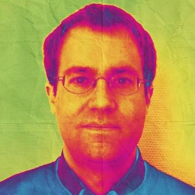

Christof's slides
This page is intended simply as a place to collect slides used in various presentations.
These are all slides made using reveal.js and hosted right here on Github.
See also my GitHub profile and homepage.
2017: DHd-Tagung in Bern
2017: Various occasions
Fall 2016: Various occasions
March 2016: Workshop "Digitale Forschungsmethoden in der Romanistik" (Würzburg)
March-April 2016: Erasmus+ Lectures and Workshops (Kraków)